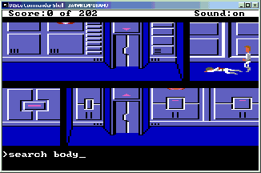

| Мемуары состарившегося геймера |
|---|
Честно говоря, я уж и не упомню, когда и во что играл в последний раз. Возраст не тот, да и время жалко на это тратить. Но вот, когда немножечко свободных минуточек все-таки нашлись, я с удовольствием написал этот текст и как будто сразу во все игрушки поиграл. Надеюсь, что такой же эффект будет наблюдаться и при чтении этого текста, что и предлагаю вам сделать.
|
|
|---|
Нынешнее поколение знакомится с компьютерными игрушками буквально с пеленок. Я же в первый раз увидел такую штуку-дрюку на первом курсе института. Летом в приемной комиссии, располагавшейся в нашем учебном корпусе, выставили розовый пластмассовый "чемоданчик" с таким же "телевизором" (это была болгарская персоналка "Правец"), и гордые старшекурсники сутками гоняли перед притихшей толпой абитуриентов (и перед примкнувшими к ним втихаря перваками, включая меня) всяческие чудесные интерактивные мультики. Помню игрушку "Ацтека" - какой-то человечек в сомбреро шлялся по каким-то коридорам, взрывал при помощи динамита стены, рубился при помощи мачете с ядовитыми змеями, лазил в пустые и заполненные золотом сундуки, а с чего все оно началось и чем закончилось, - я так до сих пор и не знаю.
Потом было несколько лет "засухи". "Правец" оставался единственной персоналкой на факультете, да и жил на чужой кафедре, а все наши студенты и сотрудники работали на разновидностях PDP-11 (MERA CM-4, Электроника-60, СМ 1420, ДВК-4...) с установленными на них вариантами RSX-11 (ОСРВ) и RT-11 (РАФОС и NTS). Что могло выжить на ядовито-зеленых выпуклостях алфавитно-цифровых дисплеев фирмы "Видеотон"? Только всякие “Тетрисы”, "Марсы", "Пакмэны", а также - великий и неповторимый "Стартрек". Причем не простенький классический "Стартрек", написанный на Бэйсике, и такой же наивный и примитивный, как и сам американский телесериал, а огромный (200 блоков!), сложный, увлекательнейший "Суперстартрек". В него мы и резались все студенческие годы, очищая Галактику от клингонов, и при этом не трогая ни толианов, ни ромуланов.
В следующий раз я близко увидел персоналку уже во время преддипломной практики. Это было подобно удару доской по черепу: после ядовито-зеленых букв на выпуклых алфавитно-цифровых экранах - вдруг сразу яркие перемещающиеся окна, извивающиеся разноцветные кривые и... компьютерные игрушки! И хотя непосредственно за клавиатуру персоналок я попал только через год, мне хватало и того, что я наблюдал за другими. А наблюдать было за чем!
Помню кучу CGA-шных игрушек, ставших классикой жанра. Совсем детская “Kitten” увлекала совсем “неподецки” - попрыгай-ка по мусорным бакам и по сырным дыркам, когда за тобой неутомимо охотятся злобные бульдоги и вредные метлы! Чем-то напоминала “Ацтеку” игрушка “Goody” - надо было бегать по городу и окрестностям, отбиваться от змей, увертываться от летящих бананов, и в итоге… э-э-э… не помню, что там было в конце, да и доходил ли я до этого самого “конца”? Суперхит - лягушонок “Toppler”, упрямо взбирающийся на вершину круглой башни по проваливающимся ступенькам. Ребята, вот тут я дошел до конца… один раз!
Параллельно не забывались и EGA-шные игрушки. Кстати, многие из них автоматически распознавали тип видеоадаптера и переключались либо в 16-цветный, либо в 4-цветный CGA-режим. Самые главные романтические воспоминания связаны у меня с “Prince of Persia I”. Целый год мы всей лабораторией оттачивали прыжки через пропасти и удары шпагой в пузо “жирного сарацина”, многократно проходили игрушку “на время” и “на бис”, а иногда и не успевали, - не хватало буквально 30 секунд до срока. Блин, ведь был и еще один возбудитель негативных эмоций: EGA-шные игрухи жрали кучу дискового пространства, иногда даже целый мегабайт (!!!) или страшно подумать - два !!! Это была целая наука - как PKLIT-ить EXE-шники, LZH-ить (не ZIP-овать, а именно LZH-ить или даже ARJ-евать!) прочие файлы, выгружать все это добро на поцарапанные дискеты… Эх-х, “были времена, прошли былинные”! А ведь уже появлялись… кое у кого… не у нас… а жаль… невиданные ранее видеоадаптеры VGA вместе с необыкновенно красивыми и увлекательными (и, увы, в ту пору пока недоступными) игрушками. Впрочем, года через полтора появился доступ и к VGA. Поздновато, конечно, все вокруг уже отыгрались, успели насытиться, и пошли дальше. Приходилось наверстывать: “Wolf3D”, “Golden Axe”, “Retaliator”… Когда VGA стала относительно доступной, появилось новая недостижимая мечта - звуковая карта, пресловутый “саундбластер”, или, по крайней мере, его примитивная замена - “ковокс” на 8-битовом ЦАП-е. Потом игровая жизнь стала серой и скучной без CD-драйва, хотя бы и 2-скоростного. Потом совсем перестало хватать дискового пространства и оперативной памяти. Потом…
А потом у меня дома появился первый собственный компьютер. Это был "AT-286/20МГц/2Мб/40Мб/косые/SVGA-256/моно" (спасибо, Миша Кузьмичев!!!), к которому стало возможным потихоньку докупать 386-ю мамку со встроенным процем и внешним сопром, б/ушный винт на 80 метров, новые 30-ногие линейки мозгов, простенькую звуковуху от Acer, грубоватый сидюк от Philips… Игровая жизнь переместилась домой, и я закономерно перешел из разряда тех, кто приходя на работу, первым делом воровато запускает какой-нибудь “Куртан” и одной рукой гоняет сундуки по экрану, а другой рукой (точнее ухом) прислушивается к тяжелым шагам начальства за дверью, в разряд тех, кто имеет полную возможность на работе непрерывно и эффективно выполнять свои прямые обязанности - т.е. работать. Чего и вам желаю.
Ну, и потекла плавная и естественная эволюция игромана. Много их было, этих игрушек - хороших и разных. Основной недостаток “домашнего” игруна - отсутствие соревнования и сопереживания. Ну да ничего страшного, “whom how”, а для меня это никогда не было главным. Оставался, конечно, неприятный осадок (точнее, зеленая волосатая зависть) от общения с необыкновенными индивидуумами, которые хвастались прохождением до конца ну абсолютно всех игрушек. Потом неизменно выяснялось, что в основе всех этих удивительных талантов лежит знание чит-кодов и юзанье всяких там “immortal player”-ов. А вы сомневались? Другой недостаток - отсутствие инфы, какие батоны жать. Впрочем, это была главная проблема даже и тех, кто гамался в большой толпе - игрушки-то все были ломаные (нередко криво, by Fabulous Furlough), без малейших признаков документации. Превалировал метод научного тыка. А вы знаете, что кроме “Esc” и “Alt-X” из некоторых игрушек надо было выходить по “Alt-Y”, “F12” и даже по “Ctrl-Alt-Del”? А некоторые игрушки казались (а, может быть, и взаправду были) “невыходными”. Забавно, что я до сих пор иногда случайно натыкаюсь в Интернете на простое решение проблем типа "как выйти из игрухи без аникея", которые терзали меня лет 15 назад.
Ну а потом я потихоньку “вырос” и “состарился”, появились новые интересы, пропало свободное время, игровое влечение поугасло, и осталось только, обливаясь умильными слезами, писать мемуары. Что я сейчас и делаю.
|
|
|---|
Есть класс игрушек, которые я называю “дамскими”. Это те игрушки, в которые охотно играют молоденькие секретарши, старенькие профессора, сидящие в декрете мамаши и прочая малоискушенная публика. Полезно иметь с собой коллекцию таких игрушек, когда приходишь “в гости” в какую-нибудь контору. Что первым делом запускает секретутка, которой нефига делать? Правильно - “солитер” или “пасьянс свободная ячейка”. А еще это могут быть:
Леди-ледями, но и джентельменcы иногда балуются подобными игрушками. Мне тоже приходилось.
Да-с, вот например шахматы. Не совсем дамские, прямо скажем, забавы - строгий “Chessmaster” или забавная “Chessbattle”. Шахматист из меня неважный. А компьютерные шахматы меня вообще добили – стоило допустить малейшую ошибочку, и железно-логичная программа разбиралась со мной по всей строгости военного времени, иногда к 10-12-му ходу. Так что, ребята, в шахматишки (и в картишки) я больше не игрец, ни в компьютерные, ни в живые, и это принципиально.
Зато, например, понравилась “Incredible machine”. Формально тоже “дамская”, хотя дамы ее не очень уважают. Если кто не в курсе, это набор разных странных предметов - блоков, шкивов, веревок, фонариков, электродвигателей, динамок, вентиляторов, револьверов, батутов, динамитных шашек с фитилем, боксерских перчаток на пружинке и прочего барахла, при помощи которых предлагалось решать разного рода конструкторские задачки. Ну, например, переместить мячик с одного угла экрана на другой. Первые 15-20 задачек действительно были рассчитаны на детишек, зато дальше начались очень и очень забавные и нетривиальные этюды, решение которых доставляло немало удовольствия. Жаль, что примерно к 70-й задачке (из 100) перестало хватать разрешающей способности мыши: самое легчайшее перемещение сего прибора приводило к рывкам курсора, а ведь предметы требовалось размещать на экране буквально с пиксельной точностью.
Еще один мой фаворит – “Supaplex”. Фактически, это все тот же “Digger”. Помните: “отправился Диггер деньги воровать, да засыпался” (с) ? Только это немножко иной “Диггер”, в котором акцент с убегания от врагов перенесен на отыскание логики перемещения по игровому пространству. Враги там тоже есть – агрессивные и колючие “ножницы”, но все-таки суть сотни различных миссий в том, чтобы в правильном порядке “прокушать” коридоры в зеленом киселе, разгрести (иногда единственно возможным образом!) пирамиды из тяжелых каменных ядер и сожрать все “инфотроны”. Однажды я так запал на эту игрушку, что потратил на нее недели три, пока не прошел штук 80 миссий, потом отвлекся, потерял форму, а начинать все с нуля было вломы. Но все равно помню и уважаю.
А еще - “Лемминги”. Подземный мир, населенный безмозглыми зверушками. Большинство из них умеют только тупо двигаться в определенном направлении, а дойдя до препятствия, поворачивать назад. Трудно жить на свете, не имея мыслительного аппарата, того и гляди, ухнешь в какую-нибудь бездонную пропасть. Слава Богу, среди леммингов попадаются узкоспециализированные “строители”, “копатели”, “взрыватели” и т.п., в нужный момент и в нужном месте расставляя которых, можно направлять движение основной безмозглой массы и, таким образом, спасать ее от неминуемой гибели. Хотя нельзя сказать, что я много времени провел за этой игрухой, но - нравилось.
“DinoBlaster” тоже забавная вещь. Это где надо бегать по лабиринту, разбрасывая за своей спиной динамитики. Знаю дам, которые непрерывно играют в эту игрушку лет 8 подряд, хи-хи.
Мдя, бывали, периоды, когда и мой явно не дамский организм настойчиво просил именно таких игрушек. Но в общем и целом, глубокого следа в мой измученной душе они не оставили.
|
|
|---|
Упоминаю эту разновидность игрушек, просто “шоб було”. А вообще игрушки подобного сорта мне глубоко параллельны. Помню, пытался лет 10 назад играть в “ФИФА-94” - на футбол похоже мало, бегают какие-то тараканы, бестолково пинают какую-то бусинку, фигня. Некоторое время развлекался с “Sharki 3D Pool” - это был EGA-шный эмулятор бильярда. Ну да, неплохая игрушка и местами забавная. Дык, и все на этом.
Ах, да. Есть еще одна спортивная игрушка, так сказать “поздняя любовь”. Но я не хочу относить ее к спортивным симуляторам. Это, скорее, - стратегия. И речь о ней пойдет дальше.
|
|
|---|
Это огромный класс компьютерных игрушек. Одних только “Формул-1”, “Раллей”, “Троффиев” и “Гранд Приксов” существует, наверное, не менее сотни. Обычно папашки покупают вместе с компьютером своим малолетним чадам именно их: мозгов не надо, верти руль и дави на газ. И сыну интересно, и папашке понятно.
Увы, а вот меня - ни разу не зацепило. Впрочем, была какая-то CGA-шная “Формула-1”, в которой можно было гоняться по трассам в разных странах. Автомобили “конкурентов” отставали после первой сотни метров, так что единственный интерес был в том, чтобы, оттачивая технику прохождения поворотов, ставить рекорды. Заполнив собой весь “Зал славы”, я остыл к этой игрушке. Еще был не менее CGA-шный “TestDrive” - гонки на время по узким горным дорогам. У нас в этот “ТестДрайв” играли на работе, ну и я тоже некоторое время грохал машины об каменные стены крутых альпийских (а может, гималайских) серпантинов и о радиаторы встречных автомобилей. Потом “некоторое время” прошло, и больше я к этому семейству игрушек не возвращался.
Был еще переходный тип - “DeathTrack”: гонки на выживание, с пулеметным обстрелом впереди идущих по трассе и разбрасыванием мин за своей “кормой”. Я сам не играл, видел как другие играют, самому не хотелось. Упоминаю только для того, чтобы логично перейти к “боевым” ездилкам и леталкам.
Одна из первых PC-игрушек, которую я увидел “в чужом исполнении”, называлась “F-19 Stealth Fighter” (а может, это была “F-16”, не помню). Завораживали долгие плавные полеты над ночными степями и городами, короткие стычки с чужими самолетами, сбросы самонаводящихся бомб на вражеские объекты, посадки на авианосцы “поперек ВПП”, странная терминология: “инклустер пошел”, “бери сликов и снаков побольше”, “сидевиндером зацепило”, “Кривак на Печенге”. Потом пристрастился сам, и к “F-19”, и к “F-117” (игровой движок общий, управление одинаковое, театры боевых действий совпадают). Слетал многие десятки миссий, дослужился до полковника, оброс орденами и медалями похлеще Брежнева… но до бригадного генерала (100 успешных миссий) не дотянул. До сих пор очень уважаю эту игрушку, хотя в последний раз играл еще “до дефолта”. Приобретя некоторый опыт борьбы с советскими ПВО на американской технике, начинаешь замечать, что F-117 при сбросе бомбы на мгновение теряет управление; что ЯК-38 “Фишбед”, увязываясь в погоню и сильно отстав, иногда поворачивают обратно; что ИЛ-76 “Грот-мачта” в воздухе неповоротлив, как бегемот, а СУ-27 “Фланкер”, напротив, очень опасная зверюга. И когда я увидел в одном справочнике, что у истребителей вертикального взлета ЯК-38 горючки хватает только сотни на четыре километров, я удовлетворенно хмыкнул. А когда несколько позже, во время репортажей из Сербии, я прочитал в газете, что америкосы потеряли-таки один “117-тый”, сорвавшийся в штопор после сброса бомбы, я какими-то другими глазами взглянул на любимую игруху. Ишь ты, блин, сказал я. Уважаю.
Была и еще одна самолетная игрушка, и тоже от “Микропроза”, и на том же игровом движке. Называлась она… э-э-э… дай Бог памяти… “Knights of the Sky”. Надо было во время 1-ой Мировой войны на древних фанерно-парусиновых аэропланах вылетать на страшно долгие миссии, дырявить немецкие цепеллины, отбиваться от аналогичных же этажерок из допотопных пушек, от каждого выстрела из которых аэроплан вздрагивал и подпрыгивал в воздухе. Помучившись немножко и выполнив пару-тройку заданий, я завязал с этой игрухой, и не жалею. Это было на о-о-чень большого любителя.
А как же другие леталки? Всякие там “Су-25”, “Б-1 Бомберы”, “Реталяторы”, “Апачи”, “Фалконы” и прочие компьютерные имитаторы авиатехники? А никак. Не впечатляли. Не были интересны. Мне приходилось сиживать (на земле, конечно) в кабинах настоящих истребителей (“МиГ-23” и “МиГ-29”), могу сравнить. Ну да, скоростеметры-высотометры и прочие циферблаты скопированы один-в-один, видимо, неплохо воспроизведены и основные тактико-технические характеристики. Но сам ход игры энтузиазма не вызывал. Взлетаешь, рук не хватает на все нужные кнопки нажимать, а тут уже и цель под брюхом, надо срочно пулять ракету, попал или не попал - не видно. Ну да, реалистично. Но мне безумно скучно.
Зато вот “LHX” более-менее понравился. Вертолет такой американский. Цепляешь на подвески подходящее железо, летишь на миссию, и во время полета на тебя постоянно прет чужая авиация, с земли с разных сторон непрерывно свистят ракеты и снаряды. Зевать некогда. Вертишься, как уж на сковородке, маневрируешь, отстреливаешься, давишь огневые точки противника, разбираешься с требуемыми целями, потом тем же манером обратно, за кордон. Весело, и адреналину выделяется нехилое количество. Одна незадача - пока играл на EGA , все было нормально; а после перехода на VGA экран начал сильно дергаться. Хорошая была игрушка, но пришлось с ней расстаться.
Кстати, была и еще одна странная игрушка. “Battle Command” называлась, или что-то вроде этого. Аналог “LHX” (та же фирма-производитель, тот же игровой движок, похожие ландшафты), только наземный. Вместо вертолета - скоростной разведывательный танк-вездеход (маулер). Что приятно, в игрухе последовательно предлагались более разнообразные миссии - разгрохать чью-нибудь базу, сопроводить какой-нибудь конвой, перехватить вражескую разведку, подобраться поближе и сфоткать какую-нибудь секретную установку. А что неприятно - игруха была запрограммирована с ошибками, и однажды мне дали миссию, для которой не оказалось требуемого снаряжения. Условно говоря, предложили чего-то там обязательно сфоткать, а фотоаппарат выдать забыли, зато его зачем-то впаривали в прошлой миссии, когда он был нафик не нужен. Ясен перец, на этом вся любовь-морковь к игрухе и закончилась.
Так я плавно перешел в своих мемуарах к симуляторам наземной техники. “A-1 Abrams” мне не понравился и был вытерт с диска мгновенно и навсегда. Но ведь “наземная техника” - это не только танки, это еще и…
…Боевые роботы! Сразу скажу: да, я знаю про культовую серию книг и фильмов “Battletech”. Пытался читать, и не хватило терпения добраться до конца даже первой книжки. (Это был второй такой случай в моей жизни, первый же случился с чудовищно занудным романом Гарри Гаррисона про цивилизацию динозавров). Да, а вот на компьютерах к боевым роботам у меня отношение гораздо более лояльное. Хотя, тоже неоднозначное. Но обо всем по порядку.
Сначала был “MechWarrior I” - помесь боевого симулятора и довольно примитивного квеста (кстати, как выяснилось, об этом “двуединстве” многие даже и не подозревали!). Ну очень понравилась мне эта игрушка. Проходил ее неоднократно, с начала до конца, и с конца к началу. Даже описалово сочинял. К сожалению, игрушка тоже оказалась неправильной в системном смысле, и “играбельность” ее пропала при переходе от 40 к 66 Мгц. Ну ничего, у меня на работе в тесном уголке пока стоит еще дряхленькая 80386-SX 33. В самый раз!
Потом была еще какая-то игрушка, несколько похожая на предыдущую внешне, но названия которой я не помню. Сам я в нее не играл, хотя издалека она мне вроде приглянулась. Наивно полагая, что и любая другая игрушка “про роботов” - рулез, я в середине 90-х приобрел CD с “MechWarrior IV Mercenaries”. Увы, разочароваться пришлось почти сразу: управление неудобное, графика примитивная и некрасивая, сама “режиссура” какая-то слишком навороченная. По инерции я прошел с полдюжины миссий и уперся в невозможность выполнения какого-то задания. Там то ли спасти надо было какой-то конвой, то ли наоборот - раздолбать его до определенного срока. Я и спасал его, и стирал с лица планеты, - все равно по истечении срока звучало “Mission failed”. Короче, где-то в пыльном чулане валяется у меня этот CD. Вам подарить? С удовольствием! Если его еще тараканы не сожрали.
Кстати, а вы заметили, уважаемые сэры, что боевые симуляторы - это предтечи 3D-стрелялок?
|
|
|---|
Но давайте прервем наше последовательно-гладкое повествование и обратим наш взор на одну категорию компьютерных игр, которую я не перевариваю. Это "каратеки". Формально, наверное, это разновидность "аркад", но мне лениво изучать и юзать общепринятую классификацию. Итак, речь идет о спортивных симуляторах, в которых моделируются всяческие единоборства - кунг фу, бокс, каратэ-до, таэквондо и т.п. Сюда же относятся и те, в которых нет ни капли никакого спорта, а хреначить виртуальными конечностями по виртуальным мордам виртуальных врагов приходится все равно. Примеры: "FatMan" (там лупцуют друг друга в стиле "кэтч" всяческие экзотические существа - какие-то андроиды, мутанты и т.п.), "Bad Street" (про путешествие по задворкам Гарлемов и Бронксов), "Mortal Combat" (не требует дополнительного описания, да?) и т.п. Есть конечно исключения. Мой любимый "Prince of Persia" ведь тоже наполнен фехтованием с сарацинами. Да и в "Golden Axe" я, помнится, игрывал. Теперь переживаю. Зачем я, гнусный карлик с вонючей нечесаной бородой, рубил мясницким топором длинноногих девочек в разноцветных купальничках? Простите меня, зайки мои...
|
|
|---|
Что вы говорите? “Каратеки” - это разновидность “аркад” и “экшенов”? Может быть, может быть… Но мне под “экшенами” удобней считать другое. Для меня это нечто ходительно-собирательно-мочительное.
Классический пример – “Commander-ы Keen-ы”, которых я видел штук 6 разных, и в некоторые даже снисходительно разминался. Впрочем, игрухи это были довольно детские и заточенные под джойстик, и большого впечатления не произвели. Зато гигантское впечатление произвел Фредди Крюгер из игрухи “Nightmare on Elm Street”. В принципе, игруха такая же примитивная по концепции… Дык, а вот попробуй – пройди до конца. Слабо? А я проходил! И даже солюшен сочинял в свое время. Встречались и еще какое-то похожие игрушки, сейчас уже не упомню, как они назывались. Вроде бы, и знаменитая “Diablo” тоже была из этой серии? Или нет? Увы, сознаюсь и каюсь, в “Дьяблу” не играл.
Очень часто отношение к игрухе зависит от какого-то неуловимого нюанса. Все-таки, “экшены” – это “чистА пацанские” игры, и наилучшей (для меня, по крайней мере) игрухой является та, которая наиболее гармонично играет на струнах “пацанскАй” души. Ну, вот например, класс очень похожих друг на друга игр: “Dangerous Daves”, “Bio Menace”, “Putup” и пр. Представляете себе? Нет? Ну вы ваще-е-е… Ну, все это что-то типа вертикального лабиринта (взгляд сбоку), наполненного коридорами, дверями, сокровищами и всяческими монстрами и злодеями. Сюжетно это – ну, например, какой-нибудь небоскреб с привидениями, а главный урод живет на крыше. Ну да, да, “Prince of Persia” и “Commander Keen” тоже из этой серии, вы правы, а я глубоко лев. Но я ж не про это, а про совокупность нюансов.
Самой наикрутейшей игрушкой этой серии я считаю “Dangerous Daves. Haunted Mansion”. Отважно в комнату сквозь люк сверху – прыг! По коридору на тебя прыжками кошмарный вурдалак, ты его тремя выстрелами – бац! Бац! Бац! Кровавые куски в разные стороны – хлюп! А сверху на тебя по диагонали зеленая сопля – вжик! А ты прыжком в сторону - хоп! Она мимо - плюх! Пока она ползет к тебе, ты патроны в магазин – блям, блям, блям! И только она снова на тебя снизу, ты ее в полете – шарах, снова кровавые куски!!! Круто.
Так, ну а другие чем хуже? Вот в том-то и дело. Есть какая-то трудно описуемая совокупность казалось бы, неважных мелочей, которая очень сильно влияет на играбельность. Ну, например, обратите внимание на пластику главного героя. В “BioMenace” он прыгал в той же позе, что и ходил, - мне это уже подсознательно не понравилось. Для того, чтобы выстрелить вверх, ему надо было подпрыгнуть, а чтобы вниз – прилечь. Фи, “фтопку” такие игрухи. (Ну, на самом деле, прошел-таки я эту разик “БиоМенасу” до конца, но впечатление осталось так себе). Ну ладно, ну а другие: “Dangerous Daves. Dave Goes Nuts”, например, или “Dangerous Daves. Daves Risky Rescue”? Движок-то был общий, а вот ощущение крутизны поблекло. Вероятно, это связано, с “нововведениями”. Например, если грохнулся с большой высоты, то пару секунд сидишь на корточках, мотаешь головой. Ну да, это более реалистично, но одновременно замедляет игру, вносит какую-то скованность. Или взять все эти прыжки по летающим платформам и скачки мимо вспыхивающих факелов или вываливающихся у статуй языков, a la “Коммандер Кин”. Еще в волыну стало можно заряжать патроны разных типов, a la “Biomenace”. Да, формально это все традициях общего жанра, но на мой взгляд – своеобразный образец инцеста, пошедшего во вред игрухе. Как-то все стало гораздо традиционней и потому - хуже.
Да, а была ведь еще одна вещь из этой серии. Хотя и сделано было это (насколько я помню) на классическом движке от Джона Ромеро, но это были не “Daves”. Там присутствовала ночь, какой-то огромный дом с привидениями, и в них надо было не стрелять из винчестера, а кидать кинжалами, и уроды утробно ревели, издыхая, и называлось это… гм… кажется, в названии было слово “Вервольф”. Господа, никто не помнит эту игруху?
Хех… а вы все еще считаете, что “экшен” и “аркада” - это сильно разные вещи? Ну, может быть. Ну, вот, например, классика – вы (на каком-нибудь звездолете, или танке, или в доспехах) ползете снизу (изредка - сбоку), вас подпирает край экрана, в руках у вас нечто пиф-пафное, а с противоположной стороны прут сонмы врагов – какая-нибудь космическая флора-фауна (“Xenon”), вражеские солдаты (“Ranger”), боевая техника (“Road Hunter”), гангстеры (“Criminal Wave”) или вообще хрен-поймешь-кто (“Myth”). Если нужно кратковременно выплеснуть излишки адреналина – лучше ничего не придумаешь. Это вот – к какому классу относится?
Или вы считаете “аркадой” очень странную разновидность игрушек, которая… гм… даже и не знаю, как это определить одним словом. Ну, вот, например, мне глубочайше впечаталась в память “Weird Dreams” . Видели? Играли? Ну и как впечатленьице? У меня – самое отвратное. Это последовательность слабо связанных друг с другом игровых эпизодов, в каждом из которых надо или куда-то запрыгнуть, или от кого-то отмахаться, или что-то куда-то зашвырнуть. Но при всем при этом этом сдохнуть – раз плюнуть (потому что требуется какой-то жуткий глазомер и сумасшедшая реакция, чтобы, сражаться, например, с агрессивно атакующей гигантской пчелой или запрыгивать на вертящуюся палку), а после исчерпания небольшого количества жизней (а новых не дают!) вас возвращают на первый уровень. Это издевательство над геймером. Я потыркался-попыркался, и вытер игруху нахрен (мое достижение – эпизод с нарисованной девочкой, которая играет в зубастый мячик).
Если уж на то пошло, самая главная “аркада” всех времен и народов – “Cdman” (“Pakman”, etc.). Бегай по лабиринту, спасайся от волков (пауков, привидений), кушай траву (деньги, фишки), да набирай очки. Или “Прехисторик”, в котором лабиринтов нет, сзади никто не преследует, а очки не только висят в воздухе, но и прячутся под камушками.
Все, не буду больше. Положа одну руку на сердце, а другой почесывая затылок, любая “аркада” заточена именно под джойстик, почти все они пришли с “Атарей”, “Амигов”, “Плейстейшенов”, “Геймбоксов” и прочих игровых платформ. Это как розовая “жувачка бубель-гум” для детей, а также для отдельно взятых взрослых, несколько задержавшихся в умственном развитии. А тех, кто вырос, ждут совсем другие игры.
|
|
|---|
Кто сказал, что “квесты” (они же “ходилки”, они же “адвентюры”) – это женская разновидность компьютерных игр? Позвольте с вами ка-те-го-ри-чес-ки не согласиться. “Квесты” - это разновидность компьютерных игр, в которые играют настоящие мачо в то время, как на коленках у них сидят симпотные чикиты, читают по-аглицки выскакивающие мессаги и подсказывают, куды главному герою бечь и чего откеля тырить. Почти не шутка.
Первый свой “квест” я увидел на чужой машине еще в CGA-шную эпоху.  Это был “Space Quest I. The Sarien encounter”, еще тот, древний, не портированный на VGA и не русифицированный, с речевым вводом. Что такое речевой ввод, спросите вы? Неужели управление героем через микрофон? Гы-гы, почти угадали. Только вместо микрофона – командная строка. Например, стоит ваш герой перед столом, который надо сдвинуть. Вы можете написать “push table”, можете “move table”, в конце концов “use table”. В любом случае герой сделает то, что вам и нужно. А вот если вы напишете “eat table” или “kiss table”, то не обессудьте, ничего не произойдет. Впрочем, в некоторых случаях (если такая возможность предусмотрена глумливыми авторами игры), в ответ на “kiss” стол может капризно отпихнуть вас полированной ножкой и проинформировать, что мол “I don’t fuck men but only furniture”.
Возвращаясь к приключениям космического мусорщика Роджера Вилки, я прошел все серии этой игрухи, от 1-ой до 6-ой. Не скажу, что они понравились мне в равной степени. Начиная с 4-ой серии, речевой ввод пропал, заменившись на ставшую теперь классической менюшку от Sierra-on-Line, из которой нужно было мышью выбирать руку (чтобы “юзать” предметы), рот (чтобы разговаривать с другим персонажами), сумку (чтобы складывать туда артефакты) и т.п. В таком же стиле был издан VGA-ремейк SQ-I, ну и нафига? Эффект обучения английскому языку как-то слегка ослаб. Не больше энтузиазма у меня вызывала и “полуречевая” технология от LucasArts, при которой надо было конструировать команды, тыча мышкой в объекты экрана (например, в “pistol” и “monster”) и в заранее заготовленные глаголы и предлоги (например, в “use” и “on”). Еще меньше мне нравилось, когда просто предлагалось выбрать нужное действие из заранее составленного списка. Впрочем, в игрушке все-таки главное она сама, а не способы управления ею, вы согласны?
Кстати, “артефакт” - искусственно созданный объект. Не знали? Учите латынь. Таким образом, всякие магические дубинки под это определение подходят, а волшебные желуди, орехи и цветы – нет. Имейте в виду и “не читайте перед обедом советских газет”.
Так вот, “квесты”. Кроме “Space Quest”-а было еще множество занимательнейших игрушек. Был “Hero Quest”, который позже превратился в “Quest For Glory” (три серии). Были две игрухи из серии “Secret of Monkey Island”. Был пошловато-прикольный “Leisure Suit Larry”. Были три волшебно-сказочных “Kyrandia”. Пробегали мимо меня также 7 серий “King’s Quaest”-а, из которых я прошел только одну (кажется, вторую), а остальные было просто недосуг. Был “Индиана Джонс”. Были три серии “Goblins”-ов, третью, на французском языке, я так и не дошел до конца. Был странный “Zak McCracken”, прохождение которого сначала пошло как по маслу, а потом герой сел в самолет… и никуда почему-то не полетел. Были, в конце концов, “Братья Пилоты”, гы-гы.
Помню еще разные помеси “квестов” с “экшенами” (вернее, наоборот, так как “экшенная” часть в них была первичной): “Another World”, например, где надо было выбраться с чужой планеты, имея пистолет в руках и напарника, местного урода, за спиной. Или вот игрушка от “Silmarils” про приключения робота-трансформера на чужой планете - “Metal Mutant”. (Брезжат в памяти еще несколько каких-то игрушек от этой фирмы, что-то там про индейцев, потом про какого-то космонавта… или рыцаря? плохо помню, т.к. только видел мельком). “Flashback” - это тоже, пожалуй, “экшвест” или “квэкшен”, про этакого Тарзана, с бластером в руках прыгающего по гигантским деревьям инопланетных джунглей, но и в него я практически не играл.
Зато подробней остановлюсь вот на каких игрушках.
“Loom Child”. Это, блин, ребята, да! Очень печальная и невероятно красивая сказка, пронизанная музыкой Чайковского и колдовством. Да-да, это та самая игрушка, где нужно колдовать не заклинаниями или жестами, а мелодиями, извлекая из волшебного посоха ноты. Кстати, вы в курсе, что если играть в нее на максимальном уровне сложности, подбирая заклинания на слух, то финал у нее гораздо более оптимистичен? Имейте в виду.
Кстати, с этой игрухой у меня связаны еще кое-какие обстоятельства. Я не могу представить себе эту игруху, звучащей иначе, кроме как через встроенный компьютерный динамик. А как игрушка звучит под саундбластером, я почти и не знаю. Дело в том, что она (а еще некоторые другие игрушки от LucasArts, например, “Secret of Monkey Island”) при попытке запуска под звуковой картой просто хрипит. Точнее так: мне встречались на чужих машинах звуковухи, одна или две, с которыми игрушка звучала корректно. Но дома и на работе заставить ее нормально звучать через наушники или колонки, сменив полдюжины разных звуковух, мне так и не удалось. Я изучил принципы работы саундбластера и адлиба. Я дизассемблировал код игрушки и пытался понять, что же где же сбоит. Тщетно. Много позже я узнал, что это не у меня одного так, что вышли какие-то патчи, исправляющие эту проблему, но мне это было уже не актуально. До сих пор только торчит в душе занозой профессиональная неудовлетворенность. Господа, никто не поможет авторитетно прояснить ситуацию – чего же ей, заразе, не хватало? Меня интересует именно технический аспект.
И еще была (и есть) суперигрушка – это “Star Control II”. Темная бездна Галактики. Тысячи звездных систем, собранных в созвездия и скопления, до каждой из которых можно долететь на своем звездолете, опуститься на планеты и их спутники (все с разным рельефом и природными условиями!), набрать полезных ископаемых и наловить образцов местной флоры и фауны. А еще приходящие из бесконечности обрывки чьих-то радиосообщений, обнаруженные на пустынных планетах остатки погибших цивилизаций и непонятные артефакты… А также изредка встречающиеся живые и активные разумные расы, которые что-то делают, добывают информацию и энергию, дружат и ссорятся друг с другом. Во всем этом надо разобраться, хороших помирить, плохих наказать, справедливость восстановить и, наконец, избавить Галактику от владычества агрессивных Ур-Кванов. И все это имеет фоном просто замечательную музыку. Короче… ух! До сих пор изредка (раз в год) запускаю и кратковременно (минут 30) наслаждаюсь… да нет, просто тащусь от этой игрушки. Как удав по щебенке.
Мдя. А ведь было и продолжение - “Star Control III”, в который я с горящими от возбуждения и нетерпения глазами бросился играть и… не смог. Это была уже игрушка нового поколения - со “спичем”, т.е. с речевым выводом. Как правило, в “квестах” чрезвычайно важно полностью и точно понимать все сообщения персонажей. Благодаря многочисленным текстовым “квестам” я приобрел нехилый словарный запас (правда, с заметным перекосом в сторону сказочно-исторической, фэнтезийной лексики). А вот на слух я, увы, аглицку мову не воспринимал, и не воспринимаю, и теперь уже никогда не буду воспринимать. (Помню, в аспирантуре перед сдачей кандидатского минимума дали нам послушать новости на ихнем языке, а потом было велено пересказать по-расейски. Мы только раза с 15-го или 20-го догадались, что два слова “ляксим бьора” вместе означают “Люксембург”). Короче, современные “квесты” мне принципиально не по зубам. Мне самому обидно и жалко, но, дык, что ж поделаешь.
И еще про квесты, точнее про всякие там солюшены и walkthrough. С одной стороны, играть надо честно. Самый главный кайф получается от того, что до всего додумался сам. С другой стороны, как правило, у “обычного” геймера (т.е. не у того, кто покупает игрушку в коробке) нет и не может быть прилагаемой к игре документации с необходимой для прохождения сопутствующей информацией. Например, в SQ-V: как “обычный” геймер может узнать имена планет (типа “Gangularis”), на которые надо летать? Полным перебором всевозможных 10-буквенных сочетаний? Неминуемо приходится лезть в солюшен, а там кроме этого все остальное тоже расписано, и куда идти, и что юзать. Получается: здеся читай, а тама не читай, а то снег башка попадет. Блин, блин и еще раз блин. Вывод прост: трудно быть честным игроком, если не являешься честным покупателем.
|
|
|---|
Чем они отличаются от “квестов”? Такие же, в общем-то, “ходилки”. В моем представлении, “ролевухи” - это “ходилки” от первого лица, в которых сюжет размазан наподобие соплей по стеклу. Может, оно и не так, тогда сорри. Давным-давно видел, как играли в “Eye of Beholder” - какие-то темные каменные коридоры, необходимость нажимать на какие-то кирпичи… Позже наблюдал “Lost Eden”, показалось занудным. Несколько лет назад взахлеб мне рассказывали про “FallOut”. Если бы мне было лет на 10-15 поменьше и образовалось немножко свободного времени, я бы, пожалуй, рискнул и познакомился с этой категорией игр поближе. А в действующей реальности больше на эту тему мне сказать нечего.
|
|
|---|
Ага, наврал я. На самом деле папашки, закупающие для своих сопливых отпрысков компьютерную технику и прочие причиндалы, вместе с железом берут не один лазерный диск (который с ездилкой), а целых два. Второй – для себя. И, конечно же, это 3D-шутер. Справедливости ради, папашкины жены, то-есть ребятенковы мамашки, обычно вряд ли бывают в восторге от вышеописанной покупки: ребенков невозможно оторвать от компьютера, они портят глаза и начинают хуже учиться, да и мужья через этот компьютер про все забывают (не то что про домашний быт, но и про супружеские обязанности), часами остервенело шинкуя вместо капусты всяческих уродов. Тем не менее, за исключением особо одухотворенных и чересчур благовоспитанных мамашек, в 3D-стрелялки играют почти все остальные: пионеры и пенсионеры, мужчины и женщины, политики и даже секретарши. Смешной пример: году так в 1997 или 98 пришлось часто ездить на Жигулевскую ГЭС, а тамошний отдел АСУ в полном составе, включая некрасивых девчонок и лысых пенсионеров, каждый день в обеденный перерыв с воплями и визгами рубился по сетке в “ROTT”. О как!
3D-стрялки начались с эпохальной игрушки “Wolfshtain 3D”. Довольно политизированной была эта штучка. Не зря ее запретили в некоторых европейских странах. Военнопленный американский агент Блажкович, отожравшись на освенцимовских харчах и отоспавшись на бухенвальдских пуховиках, решился таки зачем-то сбечь. О-па! Здравствуй елка, Новый Год! Никакая за дверями барака оказалась не улица, а громадный каменный лабиринт, заселенный немецко-фашистскими вертухаями, заваленный ключами, аптечками, шестиствольными пулеметами, патронами и золотыми цацками. Ну, дальше понятно, да? Навьючивши на себя тонны украшений, не заблудись в лабиринтах, найди все скрытые за каменной кладкой секретные комнаты, подбери все ключи, открой все запертые двери, замочи всех охранников и, напоследок, разберись по всей строгости военного времени с супернегодяями, живущими на последних уровнях каждой из шести миссий. Кстати, Гитлер оказался совсем не самым главным злодеем (хотя и убивать его приходилось два раза – сначала механические доспехи, внутри которых он ездил, а потом уж его самого), а где-то в серединке рейтинга. Главней его авторы игрушки почему-то оценили каких-то “толстых генералов” и “врачей-маньяков”.
По нынешним меркам игрушка была невероятно занудной - километры совершенно одинаковых коридоров, выложенных неровными булыжниками, отсутствие карты, однообразные схватки с безмозглыми фашистами… Но тогда она произвела просто фурор и породила массу повторов и подражаний. Сдается мне, аналогичных игр на том же движке в первой половине 90-х было создано несколько десятков. Лично мне запомнились:
И только когда все вынужденно оснастились VGA и звуковухами, наигрались в “Вольфа-3Д” до чертиков в глазах, когда она и ее клоны надоели хуже Тетриса, вот тут-то Id Software осчастливила геймеров всего мира еще более знаменитой и эпохальной… ну-ка, ну-ка… кто сказал “Quake”? Стыдитесь! Конечно же это был “Doom”! Бывалоча, сырым осенним вечерком, после 2-3 часов непрерывного “думанья” идешь домой… “Думер за угол не заходит, он туда сперва заглядывает. Думер в лужи не наступает, он сначала рядом аптечку ищет.” (с). Все это чистая правда!
Кажется, именно на этом этапе уже наметилось разделение всего класса 3D-стрелялок на две… или на три?… большие ветви, причем это разделение просматривалось даже на уровне заюзанных авторами движков.
Первую ветвь неутомимо развивали основатели жанра (“Id Software”) и их непосредственные подражатели. Идейно и эмоционально эти игры (“Doom”, “Heretic”, “Hexen”, “RoTT”, “Quake”…) были продолжением “W3D”: главное в них было пройти все лабиринты и заколбасить всех монстров. Мир, окружающий героя, был устроен хотя иногда и красиво, но предельно примитивно: коридоры раз и навсегда вырублены в скалах; патроны и аптечки разбросаны, где ни попадя; стеклянные окна не разбивались; пульты управления на практике оказывались тоже каменными, а лампочки на них нарисованными, и т.п. Нужная атмосфера тревоги и ужаса создавались агрессивностью монстров, раскраской стен, мерцающим освещением и соответствующей музыкой. Впрочем, что касается оригинальной музыки, то по настоящему мне понравилась только тема, звучащая в “Doom-I” на уровне, где живет кибердемон. А изо всей этой серии мне больше всего пришлась по душе “первая Квака” с “неоригинальной” музыкой. Я втыкал в щель CD “Времена года” и под тревожные скрипки бродил среди сырых замшелых стен гигантского замка, заселенного монстрами. Очень рекомендую, и именно под Вивальди! Что же касается, “второй Кваки”, то на прокручиваемых через мясорубку спецназовцев я как-то не реагировал, а за душу уцепили всего две вещи: пейзажи гигантской пушки на фоне гнойно-закатного неба, да смуглые худенькие девочки-киборги в кожаных бикини, которые всхлипывали от боли, выпуская в меня ракеты из искусственной руки. Вот не поверите, я мочил их, а сам плакал!
Вторую ветвь составили игры типа “Duke Nukem 3D”, “Jedi Knight”, “Redneck Rampage” и пр. Они использовали более гибкий и мощный движок, который позволял зеркалам и окнам разбиваться, мебели двигаться, стенам пачкаться, кнопкам нажиматься и т.п. Мир этих игрух был более естественен и сюжетен. О-о-о! Дюк Нюкем! Небоскребы и спутники, заселенные нечистью, заплывы по канализации, оплодотворенные чужеродным семенем землянские сам… пардон, женщины… Вау! Джедай Кнайт! Погони внутри гигантских звездолетных двигателей, сражения на лазерных мечах, гонки на лифтах… “Doom” и “Квака” нервно курят бамбук в сторонке, ей-ей! И, наконец, “HalfLife”! Это ж сплошной вопль восторга! Ну нет других игрушек, играя в которые явственно ощущаешь шероховатость ржавых стен, ядовитую вонь разлитой кислоты, жар полуденного солнца и прохладу предвечерней тени, и многие-многие другие вроде бы мелочи. Дык, у меня просто селезенка екала, когда - полз-полз по темной трубе… и вдруг вывалился из стены Большого Мексиканского Каньона на километровой высоте! И голова кружилась, когда бросал взгляд с одних летающих островов на другие сквозь лиловую дымку планеты Ксенон. “Полужизня” (и все ее продолжения “за спецназовца” и “за охранника”) - это просто длиннющий интерактивный художественный фильм, в который можно погрузиться и не вылезать из него! Рулез! Супер! Абалденно!
На этом можно было бы и закончить про трехмерные шутеры. Ну, а “третья ветка”, спросите вы? А это просто все остальное. И “Descent”, в котором впервые появилась подлинная трехмерность, а больше ничего и не было. Потом, помню еще какую-то скучную игрушку на тему зачистки города от мафии, с неплохой графикой, но ужасно неудобным управлением (типа “Tecwar” что ли какой-то?). Еще рассказывали про какой-то имитатор боевых действий, где надо сигать из окопа в окоп, увертываясь от вражеских пуль. Много их, всяких и разных, но таких, чтоб меня реально зацепило, можно пересчитать по пальцам одной ноги. Причем, левой.
|
|
|---|
В сопливом детскосадовском возрасте я очень любил играть в солдатиков: выстраивал оловянных против пластмассовых и – шагом марш! Уууу! Бабах! Позже, в младшей школе, мы играли так: рисовали на клетчатой тетрадной бумаге простым карандашом две армии, потом начинали пошагово стирать резиночкой человечков, лошадок и танки и перерисовывать их в другом месте, стрелять из одних в других, кидать гранаты и т.п. Разыгрывали реальные сражения разных войн: битву при Дарданеллах, ледовое побоище, Брестскую крепость, оборону Сталинграда…
Я просто обалдел, когда много лет спустя мне притащили на трех дискетах “UFO:Enemy Unknown” (еще ту, самую первую, с глюками на вражеских базах). Вау! Это же было тоже самое! Это же были мои любимые солдатики! Я увидел… и до сих пор не могу оторваться. (В том смысле, что по-прежнему частенько хочется, хотя не всегда можется. Времени нет.) Честное слово! “UFO:Enemy Unknown”, “X-COM II:Terror from the deep”, “X-COM III: Apocalypse”! А еще немножко другие игрушки, но тоже “про солдатиков”: “Dune II”, два “WarCraft”-а, “C&C - Сommand & Conquer”, “Red Alert”, “KKND – Krash, Kill and Destroy”! (А еще “StarCraft” и “Cossacs”, в которые я не играл, хотя много о них слышал. Обидно, досадно, но ладно.) А еще несколько версий “Heroes of Might and Magic”! (Впрочем, “HMM-IV” вызвала у меня легкое недоумение и была после нескольких миссий отложена в сторону. Говорят, недавно вышли еще “HMM-V”, отзывы противоречивые, и это настораживает).
Короче, это игрушки, которые я прошел и вдоль, и поперек, и по диагонали, и за “наших”, и за орков, и за харконенов, и по многу раз. Помню, прочитал у Лукьяненко в “Лабиринте отражений” один абзац и жестоко обиделся. Судите сами.
|
"C&C" - это стратегическая игра. Ее виртуальное пространство представляет из себя всю планету. На этом безропотном полигоне несостоявшиеся Наполеоны и Жуковы ведут бесконечные войны за мировое господство, управляя в несуществующих штабах выдуманными армиями. Там гремят танковые гусеницы и взмывают в небо ракеты. Разрабатываются новые, чудовищные вооружения, атомными взрывами выжигаются дотла мировые столицы. В этой игре не надо быть ловким или метким, здесь важно стратегическое мышление… Я немного играл в этих "солдатиков для взрослых". Игра, на мой взгляд, безобидная и спокойная. Расхаживаешь с чашкой кофе в красивом мундире по штабу, заполненному вышколенными адъютантами, и говоришь: "А не сбросить ли нам термоядерную бомбу на Лос-Анджелес?" |
Мало того, что “С&C” - это ни исторически не самая первая, ни идеологически не самая главная игруха серии. Так Лукьян еще и описал вместо нее какого-то “Панцирного генерала” (“Panzer General”). Видимо, сам не играл, а опирался на ключевое слово “стратегия”. А его книжки, между прочим, и маленькие дети тоже читают! Ну, и чему они от него научатся?
Мдя. Ну, и напоследок, о “несолдатиковых” стратегиях – всяких там “СимСити”, “Цивилизациях”, “Сеттлерзах”. Признаюсь – не играл. Может, многое упустил в своей жизни. Но - не играл, и теперь уже, ясен перец, не буду.
|
|
|---|
Собственно говоря, она одна. Это серия игрушек “Championship manger” и “Football manager” - и стратегия, и спортивный симулятор одновременно. Для тех, кто не в курсе, представьте себе гигантскую базу данных, содержащую данные по сотням тысяч реальных футбольных игроков и тренеров (от какого-нибудь Зураба Циклаури до Андрея Шевченко), десяткам тысяч футбольных команд (от самарского “Юнита” до мадридского “Реала”), тысячам городов и стадионов (от синтетической поляны “Волга” на проезде Масленникова в Самаре до “Мараканы”) и т.п. Эти данные собирают сотни добровольных ресерчеров по всему миру, которые стараются адекватно описать числовые атрибуты записей базы данных: и что Титов “балерина”, и что у Радимова язык длиннее ног, и что Роберто Карлос со штрафного пробивает стенку насквозь, и т.п. В игре имеется мощный движок, который анимирует все это дело и позволяет разыгрывать футбольные чемпионаты, турниры, кубки и отдельные матчи очень похожие… до безобразия похожие… ну почти не отличимые от настоящих! В принципе, таких игрушек немало, но все остальные делают упор в основном на красивое и естественное, разноцветное и трехмерное моделирование футбольного (хоккейного, баскетбольного, etc.) матча. А эта… Эта делает упор на моделирование всего сразу, то-есть на тысячи и десятки тысяч отношений, существующих в реальном мире между различными атрибутами различных объектов. Ну в какой, скажите, игрушке можно промоделировать патологическую любовь Жоры Ярцева к Булыкину или мировой рекорд Валика Иванова по количеству карточек в одном матче? А в CM/FM, если правильно задать атрибуты, то – можно!
Вот так поиграешь-поиграешь, и вдруг начинаешь прозревать: дык, елы ж палы! Насколько оно все адекватно жизни! И какие ж, порой, неочевидные мелочи (вернее, комплексы взаимосвязанных мелочей) проводят, например, к крупным победам аутсайдеров над чемпионами, и к турнирным крушениям вроде бы богатых и обеспеченных команд! Начинаешь понимать, как все тесно взаимосвязано за кулисами футбольного мира, и насколько трудна работа тренера.
Так что, очень рекомендую всем любителям футбола! Здорово вкручивает мозги, IMHO.
|
|
|---|
Ну вот, написал я этот текст и получил массу удовольствия. Можно было бы даже в Интернет не выкладывать, ибо нафик, если кайф уже словил? Тем не менее.
Еще хочется сказать пару слов о современных игрушках. Иногда натыкаюсь в телевизоре по "Музтв" на обзоры свежатинки. В Интетрнете изредка случайно попадаю на описания игрушек. Мдя. У меня такое ощущение, что будь мне лет на 20 поменьше, но оставайся я при этом самим собой, а не современным шелупиздиком, воспитанным на рекламе "правильного пива", то вряд ли я словил бы на современных компьютерных игрушках много кайфа. Или я ошибаюсь, или нынешняя игровая индустрия не заботится о том, чтобы играть было интересно, а лишь о том, чтобы это было кр-руто. Игры пекутся, как блины. Прогресса в качестве геймплея практически нет, зато системные требования растут по экспоненте. Честно говоря, волосы встают дыбом. Это насколько же тупо и неэффективно надо было кодить игрушку, чтобы для ее запуска требовалась машина с ГИГАБАЙТОМ памяти??? Какие олигофрены объявляют достоинством игрушки 32-БИТНЫЙ ЦВЕТ и рендеринг НЕВИДИМЫХ деталей ???
Ну ладно. С тем, что современные игрушки - дерьмо, а трава раньше была зеленей, спорить нелепо. Даже и не пытайтесь.
Плюс выкладываю пару-тройку описаний разных старых игр. Сочинял я их лет 10-12 назад, а сейчас почистил, снабдил картинками и – держите. Заодно не могу не поделиться, зачем я тогда это делал. Попалась мне в то время книжонка “50 компьютерных игр. Выпуск 3” московского издательства “Аквариум”, 475 страниц, 10000 экз. Открыл я ее и… упал под стол, судорожно дрыгая ногами: каждая страница этого напечатанного нехилым тиражом “литературного труда” содержала буквально десятки грамматических, пунктуационных, речевых и просто фактических ошибок. Ну, например, смотрим на страницы 10 и 11, описание квеста “Alone in the dark”:
…Расстреляйте собаку из ружья, которая вылезет из окна…
…Используйте изогнутое лезвие на библиотекаре…
Вы уже “пацталом”?
Вот мне и захотелось проверить, а получится ли у меня хоть чуть-чуть получше? Вроде получилось. Так и пролежали эти описания дюжину лет в архивах, пока я не достал их и не предлагаю на всеобщее обозрение. Естественно, исключительно из сентиментальных соображений.
Плюс еще малохудожественные рассказики, посвященные разным играм. Играешь так, играешь, а сам фантазируешь… Гм, а забавно в итоге получается!
Еще выкладываю всякие мелкие утилиты, которые сам писал и сам юзал в то время. Например, полезную прожечку, которая позволяет искать “последнего врага” на базах в “УФО” и “УФО-2”. Кстати, выяснилось, что “последний враг” иногда действительно торчит в таком месте, где найти его самостоятельно – дохлый номер: например, замурован в стену, и выковыривать его оттуда можно только бластерными бомбами; или – между деревянными ящиками, окружающими его со всех сторон и сверху.
Ну ладно. Ну вот и все. Всем привет, пишите письма.